Non-canon. Non-period. Non-negotiable. Flux3 can do anything, so it did.
Keechwah's commute. Pact magic is constructed, not stumbled upon. Neither are dolphins.Storm Made Flesh. A romance cover with no title, because the title is him.Not a Pawn. Shade plays to win. The bear plays to eat the pieces.Service, Uninterrupted. Vicious Mockery is a spell. This is just Tuesday.Adventuring Safety 101. Lesson one: don't. Lesson two: see lesson one. Rocketcandy is auditing.The Salon. Tongue out, daisies in, bear snoring. Do not wake the client.Exact Change. She has hundreds of gold and zero concept of a wallet.Code Enforcement. That beam is not up to code. Nothing here is up to code. He'll be back with forms.
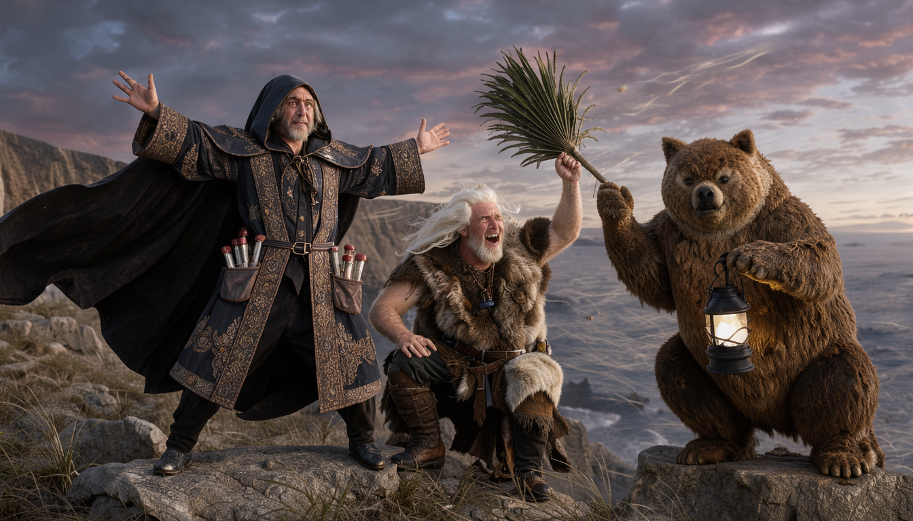
Mysterious, Darling. Wind by Chip. Lighting by bear. No notes.
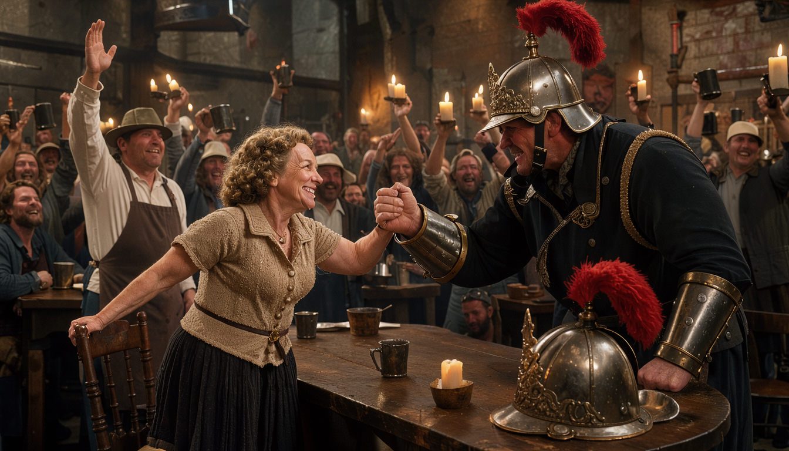
Two Gold Says She Wins. She's already won. He's just finding out.
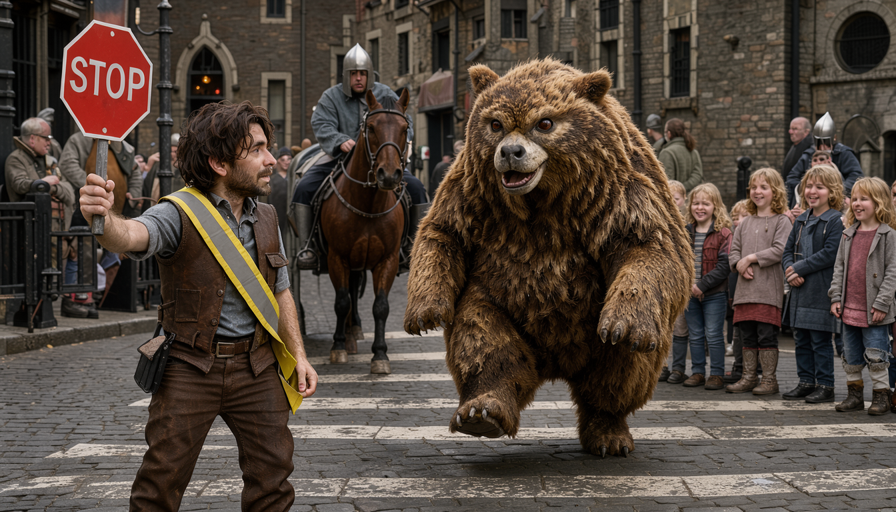
Stop Means Stop. Crossing guard Shade does not care how big your paws are.
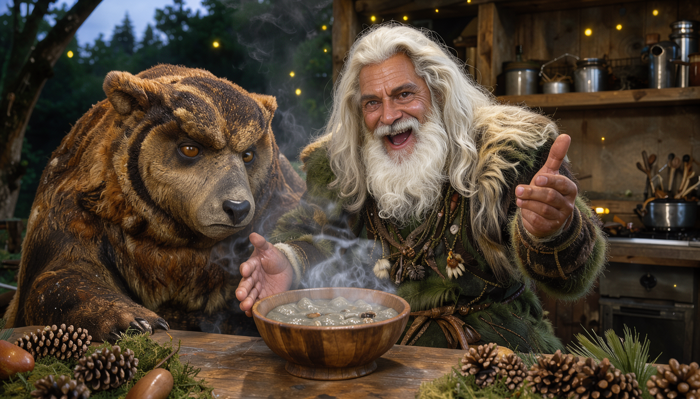
Foraged & Furious. One hundred percent foraged. Zero percent seasoned. The bear has notes.
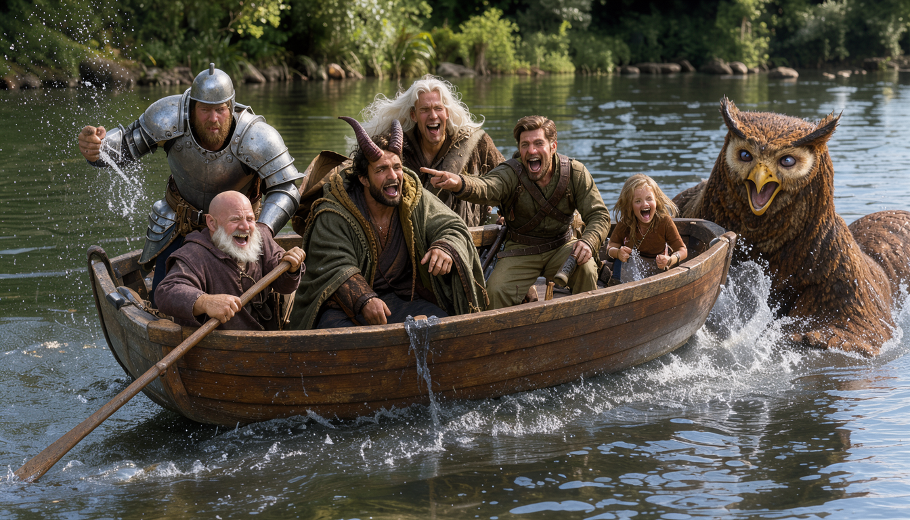
Seven in a Boat Built for Two. Shade claims this was his idea. Shade is lying. Everybody is delighted.
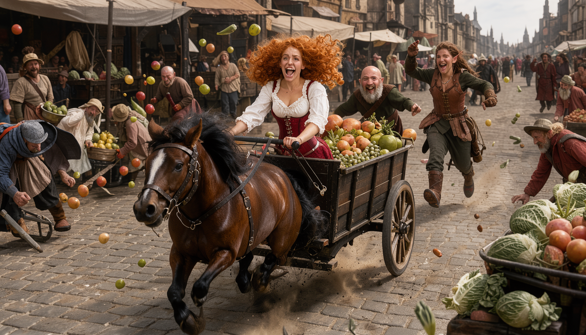
Produce-Based Chaos. She paid in wheelbarrow. The cabbages paid in full.
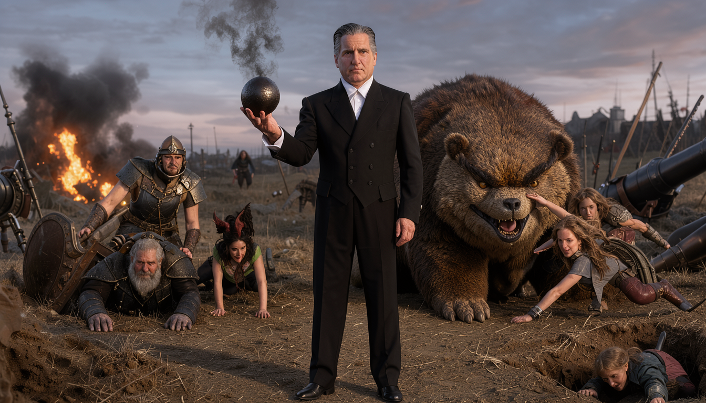
Caught It. Not a hair out of place. Everyone else is in the dirt.
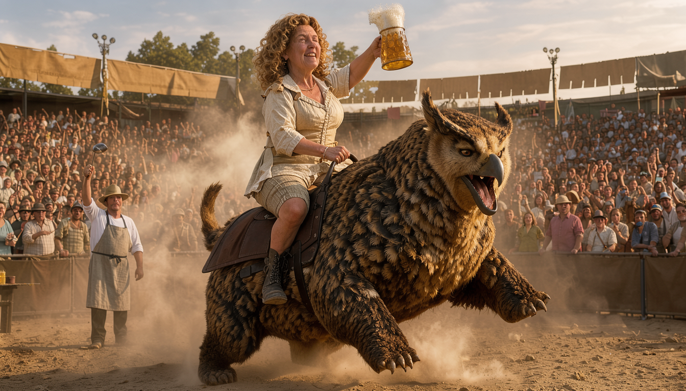
Eight Seconds. Ale unspilled. Owlbear unbothered. Sammy judging.
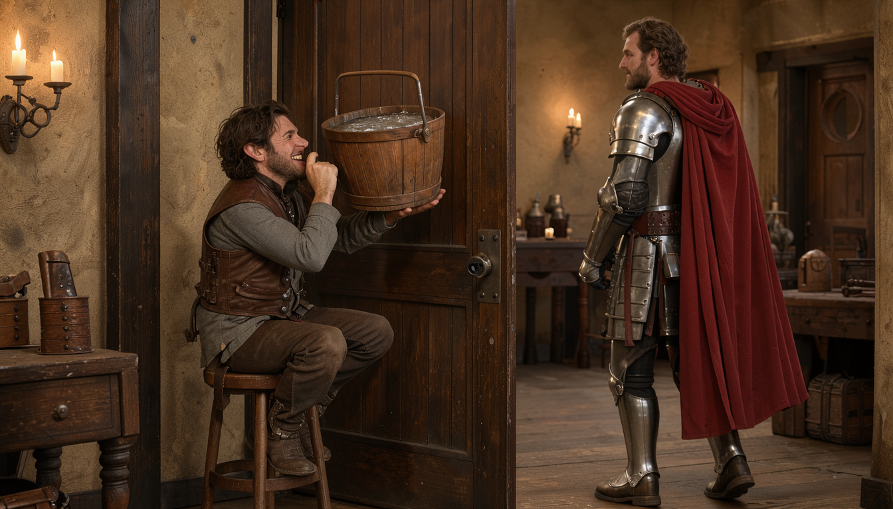
Hydrodynamics. Caught holding the evidence. The paladin saw everything.
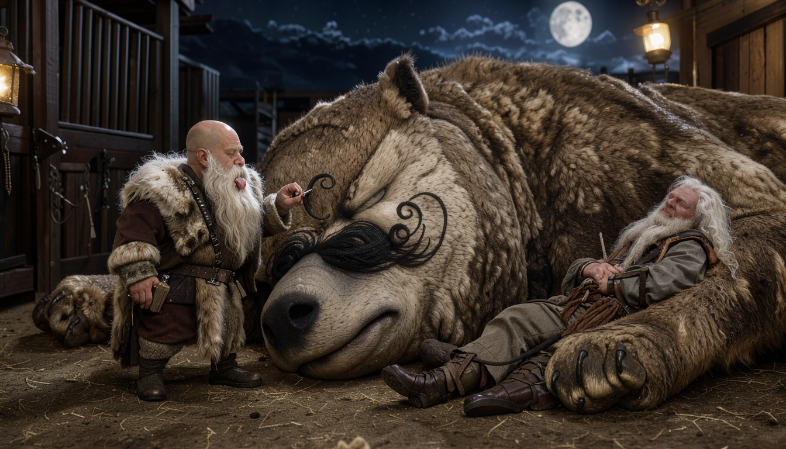
Charcoal Gentleman. Tongue out, curls perfect. The client snores on.
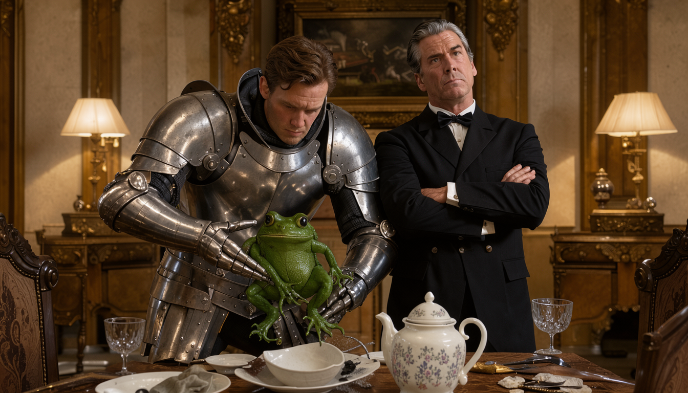
A Formal Presentation. He was putting it in the teapot. Now he's presenting it. Biggins prefers this even less.